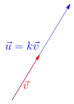
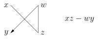
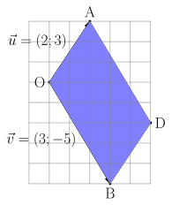
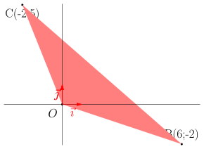
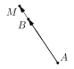

Déterminant
Table of Contents
1. Qu’est-ce que le déterminant ?
1.1. À quoi ça sert ?
En mathématiques, le déterminant joue un rôle fondamental en géométrie et en algèbre. Il permet de former de nombreux liens avec différents champs des mathématiques.
En seconde, nous utiliserons le déterminant avec des vecteurs, et il nous sera utile en géométrie, et apportera des techniques de calculs concernant les droites du plan.
1.2. Quelles en sont les principes fondamentaux ?
Le déterminant se calcule à partir des coordonnées de deux vecteurs, et renvoit un nombre réel (c’est à dire un nombre positif ou négatif).
Sur un schéma, voici ce que ça donne.

Mathématiquement, on le note comme il suit :
Soit \(\vec{u}\) et \(\vec{v}\) deux vecteurs. On pose alors \(\textrm{det}(\vec{u}, \vec{v})\) le déterminant des vecteurs \(\vec{u}\) et \(\vec{v}\), qui est un nombre réel (c’est à dire, négatif, nul, ou positif).
1.3. Quelles sont les premières propriétés du déterminant ?
Le déterminant est une application qui permet de détecter les vecteurs qui sont colinéaires.
Si \(\textrm{det}(\vec{u},\vec{v}) = 0\), alors les deux vecteurs \(\vec{u}\) et \(\vec{v}\) sont colinéaires. Inversement, si \(\vec{v}\) et \(\vec{u}\) sont colinéaires, alors \(\textrm{det}(\vec{u},\vec{v}) = 0\)
Mais le déterminant au aussi beaucoup de propriétés calculatoires qui permettent parfois de simplifier les calculs. Nous nous étendrons pas sur ces propriétés, mais elles existent.
Avec deux vecteurs, on dit qu’il est bilinéaire, c’est à dire que par exemple : \[ \textrm{det}(k\vec{u},\vec{v}) = k\textrm{det}(\vec{u},\vec{v}) \] avec \(\vec{u}\), \(\vec{v}\) deux vecteurs, et \(k\) un nombre réel. On encore, si \(\vec{w}\) est un vecteur : \[ \textrm{det}(\vec{u} + \vec{w},\vec{v}) = \textrm{det}(\vec{u},\vec{v}) +\textrm{det}(\vec{w},\vec{v}) \]
On peut «presque» échanger le rôle du premier et deuxième vecteur, ça ne changera pas trop le résultat (seul le signe sera changé).
Pour \(\vec{v}\) et \(\vec{u}\) deux vecteurs du plan, on a : \[ \textrm{det}(\vec{u},\vec{v}) = - \textrm{det}(\vec{v},\vec{u}) \]
2. Mais quel calcul permet de nous donner ce coefficient ?!
2.1. Trouvons une formule qui permette de détecter des vecteurs colinéaires ?
Dans cette partie, on fixe deux vecteurs \(\vec{u}\) et \(\vec{v}\) de cordonnées respectives \(\vec{u} = (x, y)\) et \(\vec{v} = (z, w)\), dans un repère \((O, \vec{i}, \vec{j})\) orthonormé.
On cherche un calcul qui permette de détecter, uniquement à partir des coordonnées de \(\vec{u}\) et \(\vec{v}\), si ces vecteurs sont colinéaires.
Imaginons qu’ils soient colinéaires. Alors, cela signifie qu’il existe un scalaire \(k\) tel que \(\vec{u} = k \vec{v}\).

Autrement dit, on sait que \(x = kz\) et \(y=kw\). Si on suppose qu’aucune cordonnées sont nulles (c’est à dire ni \(x\), \(y\), \(z\), et \(w\) ne sont des nombres nuls.), alors on peut dire que \(\frac{x}{z}=k=\frac{y}{w}\). Donc : \[ \frac{x}{z}=\frac{y}{w} \] Pratique, mais cette formule ne marche pas si \(z\) ou \(w\) sont nuls. On aurait pu inverser chaque formule, mais là encore il faudrait que \(x\) et \(y\) sont différents de \(0\). À la place de ça, on va multiplier la formule précédente par \(z\) et \(w\). On obtient : \[ x \times w = z \times y \]
Si ces deux quantités sont égales, c’est que leur différence est nulle ! Donc la formule qui peut détecter si deux vecteurs sont colinéaires pourrait être : \[ \textrm{det}(\vec{u},\vec{v}) = x\times w - z \times y \] Ce qui est exactement la définition que l’on va retenir pour le déterminant. On peut vérifier que cette formule a exactement les propriétés que l’on a donné plus haut, et quelle fonctionne même si les coordonnées sont nulles.
On résume tout ça dans la partie suivante.
2.2. Définition du déterminant à partir des coordonnées des vecteurs.
Soit \((O, \vec{i}, \vec{j})\) un repère orthonormé, et \(\vec{u}=(x, y)\), \(\vec{v}=(w, z)\) deux vecteurs dont on connait les coordonnées dans le repère.
Alors, on définit le déterminant de \(\vec{u}\) et \(\vec{v}\) par : \[ \textrm{det}(\vec{u},\vec{v}) = xz - yw \]
Pour s’en souvenir au mieux, on peut placer les coordonnées des vecteurs verticalement : le calcul du déterminant ressemble alors à un produit en croix :

2.3. TODO Exemples
Pour calculer le déterminant de deux vecteurs, on peut les placer verticalement. Prenons \(\vec{u} = (1;2)\) et \(\vec{v} = (3; 4)\), on calculera alors :
\begin{align*} \textrm{det}(\vec{u};\vec{v}) &= \left| \begin{array}{cc} 1 & 3 \\ 2 & 4 \\ \end{array} \right| = 1\times 4 - 3 \times 2 \\ \textrm{det}(\vec{u};\vec{v}) &= 4- 6 = -2 \end{align*}Donc, ces deux vecteurs ne sont pas colinéaires, et on verra plus tard (attention spoiler) que l’on peut en déduire que l’aire du parallélogramme engendré par les vecteurs \(\vec{u}\) et \(\vec{v}\) est de \(2\).
3. Une autre interprétation du déterminant.
S’il y a bien quelque chose à retenir du déterminant, la voici :
Le déterminant : c’est de la magie.
Quelques explications s’imposent.
Lorsque l’on se donne deux vecteurs dans le plan, comme les vecteurs \(\vec{u}\) et \(\vec{v}\) dans l’image ci contre :

On peut alors former un parallélogramme, en remarquant que \(\overrightarrow{OA}=\overrightarrow{BD} = \vec{u}\), mais aussi \(\overrightarrow{OB}=\overrightarrow{BD} = \vec{v}\), donc que \(\overrightarrow{OD}= \vec{u} + \vec{v}\).
On peut se demander comment calculer l’aire du parallélogramme \(OADB\). Et bien, voici comment on peut faire :
Soit un parallélogramme dont les cotés sont donnés par deux vecteurs \(\vec{u}\) et \(\vec{v}\) du plan.
Alors : \[ \lvert \textrm{det}(\vec{u},\vec{v}) \lvert = \textrm{Aire du parallélogramme}(OADB) \]
3.1. Exemple
Si on a, comme sur le dessin, \(\vec{u} = (2;3)\) et \(\vec{v} = (3;-5)\), alors l’aire du parallélogramme est donnée par : \[ \lvert \textrm{det}(\vec{u},\vec{v}) \lvert = \lvert 2\times (-5) - 3 \times 3 \lvert = \lvert -10 - 9 \lvert = \lvert -19 \lvert = 19 \]
Donc, si on considère que \(\lVert \vec{i} \rVert = \lVert \vec{j} \rVert = 1\) cm, autrement dit, si les carreaux sur la grille font \(1cm\) de coté, alors on peut en conclure que le déterminant du parallélogramme \(OADB\) est de \(19 \textrm{cm}^2\) (ou dit autrement que l’aire du parallélogramme fait exactement \(19\) carreaux).
3.2. Exercice
Calculer l’aire du triangle \(OBC\) ci-dessous.

Indice chez vous : Ce triangle a comme aire exactement la moitié qu’un parallélogramme. Pourriez-vous trouver lequel ?
3.3. Pourquoi une valeur absolue ?
Dans la formule précédente, on voit apparaître une valeur absolue. C’est parce que le déterminant peut être négatif, alors qu’une aire non. En fait, le déterminant va compter une aire négative lorsque l’on lui donne des vecteurs dans le sens horaire.
3.4. Mais ça marche tout le temps ?
Oui. Même dans des dimensions supérieures (dans le plan, dans l’espace, et vers l’infini et l’au delà).
3.5. Que se passe-t-il lorsque les vecteurs sont colinéaires ?
Réfléchissons un peu. Deux vecteurs \(\vec{u}\) et \(\vec{v}\) sont colinéaires s’ils peuvent être placés sur un même droite. Mais alors, le parallélogramme formé est plat. Donc son aire est… Nulle ! On retrouve la proposition :
Deux vecteurs \(\vec{u}\) et \(\vec{v}\) sont colinéaires si et seulement si \[ \textrm{det}(\vec{u},\vec{v}) = 0 \]
Comme les choses sont bien faites !
4. Application : trouver une fonction affine qui passe par deux points du plan.
On utilise le déterminant pour trouver l’ensemble des points \(M = (x; y)\) qui appartiennent à la droite \(A\) et \(B\) dont on connait les coordonnées d’un repère orthonormé \((O; \vec{\imath}; \vec{\jmath})\).
Montrons cela avec un exemple, on suppose que \(A = (-5; 1)\) et \(B=(-4; 4)\), dans le repère \((O; \vec{\imath}; \vec{\jmath})\).
Le vecteur \(\overrightarrow{AB}\), appelé vecteur directeur de la droite \((AB)\) (mais il en existe d’autres), admet comme direction la droite \((AB)\). Tous les points \(M\) qui sont sur la droite \((AB)\) respectent la propriété suivante : \[ M \in (AB) \iff \overrightarrow{AB} \text{ est colinéaire avec le vecteur } \overrightarrow{AM} \]

Mais si \(\overrightarrow{AB}\) est colinéaire avec le vecteur \(\overrightarrow{AM}\), alors le déterminant des deux est nul.
On calcule donc le déterminant des deux vecteurs en question.
\begin{align*} \overrightarrow{AB} &= ( -4 + 5; 4-1 ) = (1, 3) \\ \overrightarrow{AM} &= (x + 5, y - 1) \end{align*}Donc :
\begin{align*} \textrm{det}(\overrightarrow{AB}, \overrightarrow{AM}) = \left| \begin{array}{cc} 1 & x + 5 \\ 3 & y - 1 \\ \end{array} \right| = 1\times (y - 1) - (x+5)\times 3 = 0 \end{align*}Donc, on obtient l’équation suivante (en développant) : \[ y - 3x = 16 \] Ce que l’on appelle une équation de droite. Nous, on sait que la fonction affine qui nous intéresse s’écrit \(f(x) = Ax + B\), et cela correspond à l’ordonnée du point \(M\) que nous cherchons, autrement dit \(y = f(x)\). Donc, ici : \[ f(x) = 3x + 16 \]
On vérifie que l’on a bien \(f(-5) = 1\), et \(f(-4) = 4\), donc \(A\) et \(B\) font bien partis de la courbe représentative de la fonction affine \(f\), autrement dit la courbe représentative de la fonction \(f\) correspond à la droite \((AB)\).